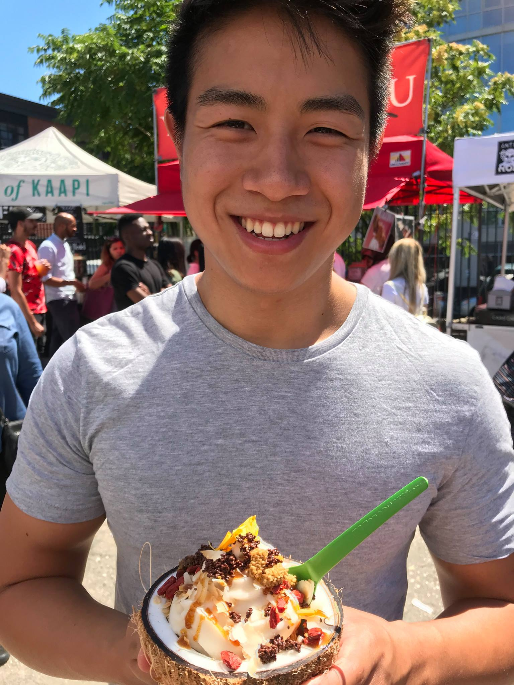

About Me

My name is Gregory Tang! I graduated from UC Berkeley in Spring of 2019 and majored in Molecular and Cellular Biology. I have an interest in creating things through technology and aspire to one day found my own company. Currently, I am attending UC Berkeley's Full Stack Flex Bootcamp program, with the goal of becoming a self-sufficient coder and product designer.
Some of my interests include hiking, exercising, coding, gaming, walking dogs, eating, and trying new things. I live in San Francisco near Japantown, and enjoy the rush and bustle of the city. I'm always looking to make new connections and meet new people. Listening to others and learning what others have gone through to get where they are today always inspires me to work harder and venture out of my comfort zone!
I'm extremely interested in creating and managing a product through it's entire life cycle. The industry that I am passionate about is healthcare and wellness, although I am always curious and open to getting involved in anything that I can. My dream is to one day start my own company that will make people's lives better. I always have random ideas brewing in my head, so if you have any ideas or want to work on something together, just reach out to me!
Github: https://github.com/Tangerinez
Linkedin: https://www.linkedin.com/in/gregory-tang-041127153/